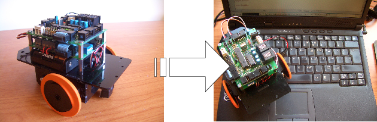

1) Ordenador con puerto serie (o conversor USB-serie)
2) Cinta aislante negra
3) Paciencia e Ingenio
|
Taller de Robótica Básico - Skybot v1.4. - SESION 4 |
|
 |
En esta sesión empezaremos a programar en profundidad el robot, sacándole todo el juego al binomio skypic-ct293. Veremos como acceder a los recursos de las tarjetas y hacer exactamente lo que queramos con sus puertos y los motores controlados por la CT293 (los motores, o lo que tengamos conectado :-p ) y nos familiarizaremos con él. Aprenderemos, a base de ejemplos, a programar el robot. ¡¡Aquí comienza la acción con MAYÚSCULAS!!
Ejemplos de programación: Programando el Skybot
|
|
1) Ordenador con puerto serie (o conversor USB-serie) 2) Cinta aislante negra 3) Paciencia e Ingenio |
Primero hay que tener claros algunos conceptos del funcionamiento del microcontrolador y de qué es eso de la programación en C. Ver esta parte de introducción.
Para comprobar que todo está bien instalado y funcionando, probaremos el programa “hola mundo” en su versión profunda, sin ayuda de la libreria skybot. Es el programa más sencillo que podemos cargar en el robot, que lo único que hacer es enceder el led que tiene.
Usuarios de Linux, seguir estas instrucciones
Usuarios de Windows, seguir estas instrucciones
Después de comprobar que el “hola mundo” funciona y ver que se tienen correctamente instaladas todas las herramientas, veremos con un poco más de detalle su funcionamiento. Aprenderemos el funcionamiento del puerto de entrada/salida B que es el que permite conectar el “cerebro” con los motores y sensores. Aquí está la información.
Para poder programar el robot sólo nos queda conocer un poco más sobre el manejo de los motores y la lectura de los sensores, desde el punto de vista del programador: cómo desde el software podemos controlar el hardware y que haga lo que nosotros queremos. Aquí está la información.
Finalmente pondremos en práctica todo lo aprendido, viendo ejemplos en C para programar todos los recursos del microcontrolador y controlar el robot. Daremos muchos ejemplos muy sencillos, para que a partir de ellos se comprenda el funcionamiento y sea muy sencillo construir nuestros propios programas. Aquí están todos los ejemplos.
...Tendremos el software instalado y probado y ya habremos hecho muchas cosas con el robot. Sabremos cómo moverlo y cómo leer los sensores. Todo está listo para empezar a desarrollar nuestras propias ideas y algoritmos sobre nuestro skybot ... (si es que aún parece un skybot y no un tanque gracias al sky-modding)
Microchip, el fabricante de los microcontroladores PIC
SDCC, compilador de C
Gputils, utilidades de GNU para los PICs
Programmers Notepad (PN), un editor libre para Windows.
Pikdev, un IDE para la programación de los pics